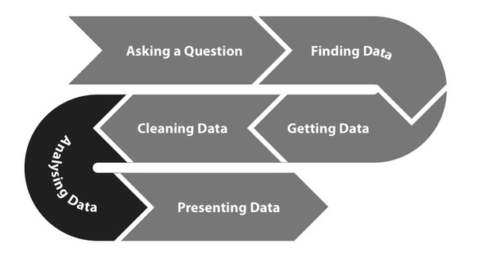

Analysis

Data Processing Pipeline
Dear reader - we know you are the experts. We're not going to teach you all the basics, but this section's aim is to show you how technology can help speed up, scale up or simplify your working practices. For this reason in this section we will say only a few words about statistical methods, even though many of you will be very familiar with those.
Once you have your data in a suitable format to be dealt with, much of your analysis can be automated with a custom program or inside spreadsheet software. Obviously the deeper your data dive is, the less automated things become, but having a standard set of post-processing, analytical steps to run on a dataset helps make sure you haven't missed anything. Some of the steps may seem basic, but it always helps to have a checklist!
Sorting data
Possibly the simplest way to find some interesting points is to sort by a column or category. In spending datasets, it's common to rank data by the largest transactions and look at the beneficiaries. This also gets you the maximum or minimum values of a column, which could be interesting.
Basic statistical analysis
Statistical analysis such as calculating percentiles or the average of a dataset, are essential to characterize your data. These are available in most programming languages as well as most spreadsheet programs like excel. A more complete list of statistical tools and resources can be found at the resources chapter.
- An average is a measure of central tendency in a sample. It can be described as the "typical" or representative value of a data set. Knowing the average helps detect whether any single payment is atypical.
- A percentile is the value of a variable under which a certain percentage of the data fall. For example, if a transaction amount is in the 90th percentile, then it is larger than 89% of the transactions in the dataset.
- A standard deviation measures how far away a value is from the average. If your standard deviation is low, then it means your row values are clustered together. If it's high, then they are spread out. By checking for values that are one, two, or three standard deviations outside the mean, you can detect outliers. Outliers could be errors or extremely interesting data points.
Summarizing or aggregating by categories
Sometimes data is available at a very high level of detail, making it hard to see the big picture. It's a good idea to have a standard set of categories to aggregate by, such as geographic unit, functional classification, account number, fiscal year or other temporal unit, government department, or even recipient.
Normalization for comparability
In order to be able to compare data across time or other parameters, you may need to systematically adjust the data values. Here are some examples.
- Deflation or inflation. Expenditure data is naturally obtained with current (or nominal) money value, but such data is not directly comparable across different years since inflation affects the value of money. In order to compare currency across years, it is necessary to deflate or inflate the value according to a base year. For example if we wish to compare the budget of a program in dollars from 2000 with the same program in 2012 we must adjust the value of the 2000 data and the 2012 dollars to a base year. Deflator and inflator factors are calculated by central banks in most countries and a comprehensive list by country can be found at the World Bank website (http://worldbank.org)
- Scale and normalize values. When we wish to compare patterns of budget programs sometimes the difference in scale between budgets may prove difficult to display in a graphic form. In such cases is useful to compare percentages instead of absolute numbers. For instance, it is very common to express budget and spending data as percentages of a country's GDP, instead of in absolute numbers. If you're mapping spending, make sure to scale your data by population density. Otherwise, your map will most likely just be a map of where your populace lives.
You may want to visualize your data to get better understanding of your initial assumptions. This may save you a lot of time in case your initial assumptions were not good, and may also help you to get more insight into new findings your data might contain but previously were not clearly visible. For this purpose you can use scatter plots, line graphs, heat maps, bar charts.